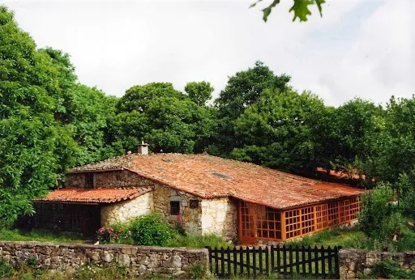

Retiro de verano 2023
"Cualquier libro puede describir una técnica, pero una actitud debe ser transmitida por una persona." — Claudio Naranjo
“RETIRO DE PROFUNDIZACIÓN PARA CONECTARSE CON UNO MISMO”
Va a ser un retiro muy práctico para la vida cotidiana. Tendremos varios días de adiestramiento de la mente, practicando el estar consciente en cada momento con cada acción que estés haciendo o con cada ejercicio que se proponga.
Se trata de que durante el Retiro la mente experimente lo que significa estar atentos, para que cuando volvamos a la vida cotidiana, nuestra mente se encuentre adiestrada en la atención al momento presente.
Vamos a hacer casi las mismas cosas que en casa: comer, ducharnos, lavarnos los dientes, caminar, charlar… pero vamos a practicar a hacerlas con atención a lo que hacemos a lo largo de todo el día, no solo en la sala de meditación sino en el comedor, la habitación, los lavabos y en el camino que lleva de un sitio a otro.
Vamos a practicar trabajos psicocorporales y meditaciones:
-Vibración. Respiración Profunda. Respiración de barrido. Danza Trance.
-Postraciones. Hara. Meditación Activa.
-Respiración consciente. Meditación sentada (cortas y largas). Meditación caminando.
-Ecstatic Dance.
-Charlas, Noble Silencio, Alimentación consciente. Campanas de consciencia. Integraciones. Naturaleza. Películas…
Vamos a comprobar que la Meditación, la Atención y la Consciencia se pueden vivenciar sin dureza, sin sufrimiento, practicándolas de forma alegre, relajada y firme. Vamos a disfrutar cada práctica con una actitud relajada y amable, un espíritu abierto y un corazón receptivo.
Este Retiro es un periodo que nos va a permitir vivir en alegría y paz una vida sencilla y desarrollar nuestra paz interior siendo conscientes de nuestras dificultades reales y nuestros problemas.
También es una práctica en la que nos va a beneficiar la energía colectiva del grupo.
El hecho de que dure una semana es para que enraíce en ti el arte de vivir en consciencia y se convierta en parte de tu vida cotidiana.
El Retiro no solo va a ser para pacientes de Ydnelia, sino que puede venir cualquier persona que esté interesada en esta práctica de vivir plenamente el momento presente, por lo que se lo podéis comunicar a familiares, amigos o conocidos…
Al ser una práctica de vivir conscientes, el Retiro va dirigido, no sólo a veteranos, sino también a personas que nunca hayan hecho ningún trabajo de desarrollo personal.
INFORMACIÓN
Imparten: David Sanmartín, equipo de Ydnelía
Lugar: A Casa da Terra. www.casadaterra.com
Fechas: El viernes se haría la presentación del Curso a las 19 horas, pero los que no podáis llegar os podéis incorporar cuando lleguéis. El siguiente viernes se acaba a la hora de comer.
Precio: 420 euros del Curso (en parejas, el 2º miembro paga el 50%) + 350 euros, coste de la Casa.
Parejas o personas no participantes en el curso, solo pagan el coste de la casa.
Si hubiese sitio, para personas que trabajan y les resulta imposible venir toda la semana, hay la posibilidad de participar de viernes a domingo. Abonarían 140 euros por el curso + 100 euros de casa.
También se puede participar en días sueltos según posibilidades de cada persona.
Los que tengáis dificultades económicas pero deseáis hacer el retiro, plantear vuestra situación.
Cosas para llevar: ropa cómoda, antifaz si queréis, neceser, toallas. Esterilla para relajaciones, manta o saco de dormir. Banco de meditación ó zafu (cojín para meditar). Libreta y bolígrafos.
Cosas relacionadas con alguna habilidad que tengáis y queráis compartir: material para dibujar, instrumentos musicales…
Es necesario apuntarse. Plazas limitadas
